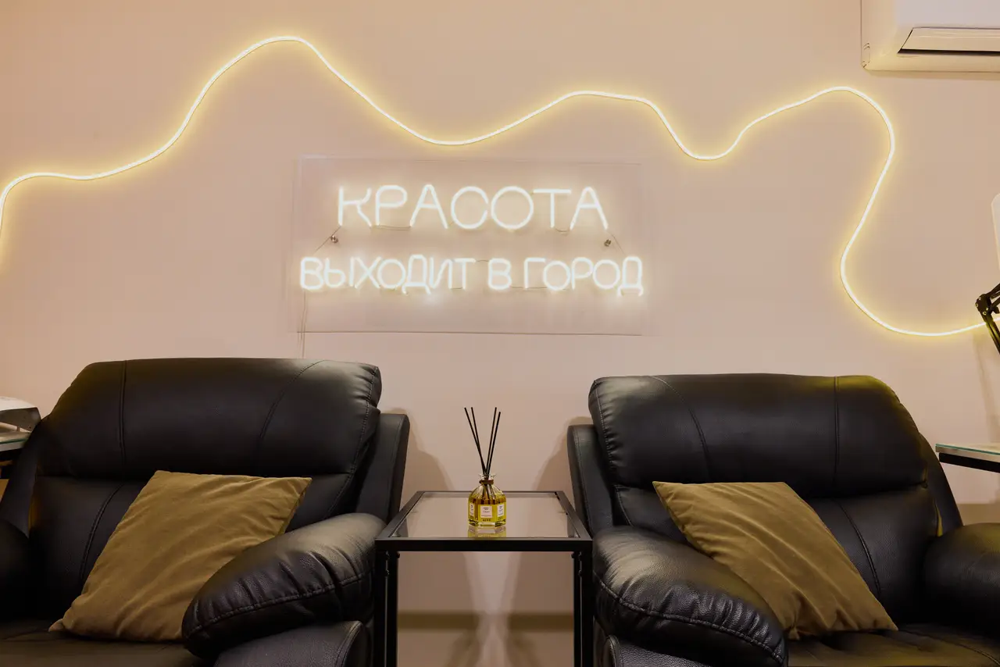
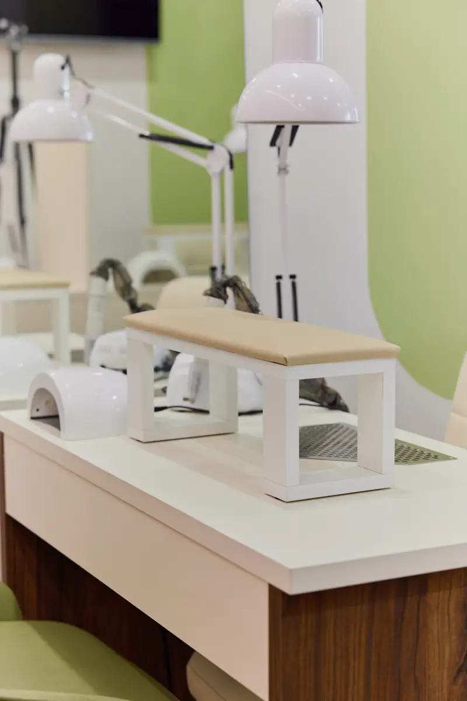
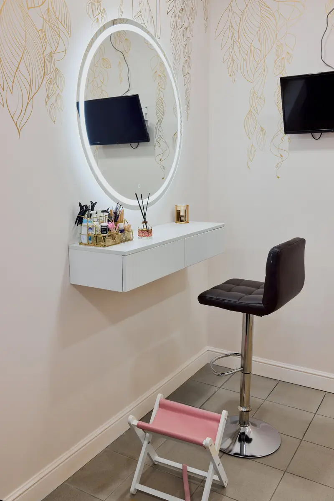
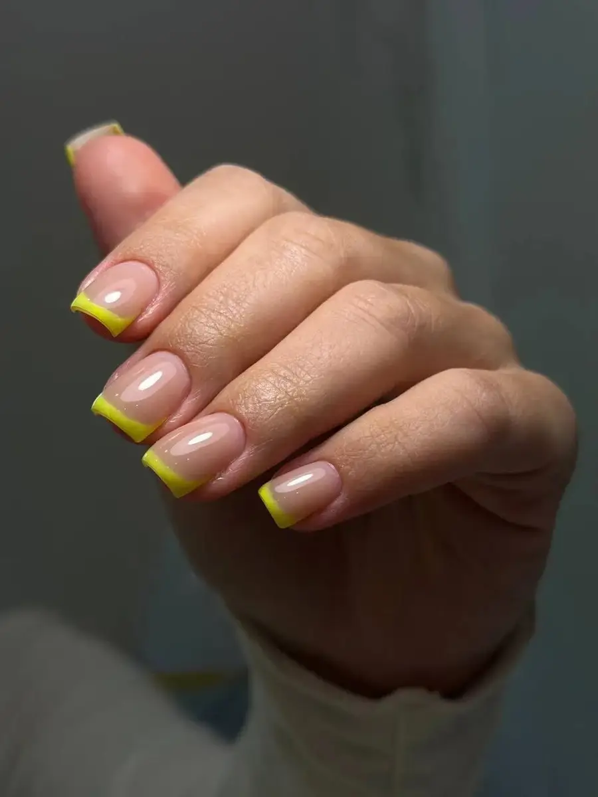

Ногтевая студия · Казань
Маникюр, педикюр и брови в Казани на Ибрагимова
Студия «Мой выбор» на проспекте Ибрагимова, 29: выберите услугу, день и время – чат откроется с готовым текстом. Цены видны до записи.
- Ежедневно с 10:00 до 22:00
- Рейтинг 5,0 на Яндекс.Картах
- Кофе и фильм во время процедуры

Цены
Прайс с карточки студии на Яндекс.Картах. Цена зависит от уровня мастера (мастер, топ-мастер, про-мастер): на сайте указана цена «от», все уровни – под названием услуги.
Маникюр
- Маникюр без покрытияМастер 1 100 ₽ · Топ-мастер 1 300 ₽ · Про-мастер 1 500 ₽от 1 100 ₽
- Маникюр с покрытием гель-лакМастер 1 800 ₽ · Топ-мастер 2 000 ₽ · Про-мастер 2 200 ₽от 1 800 ₽
- Японский маникюрМастер 1 600 ₽ · Топ-мастер 1 800 ₽ · Про-мастер 2 000 ₽от 1 600 ₽
Мужской маникюр и наращивание
- Мужской маникюрбез покрытия; Мастер 1 200 ₽ · Топ-мастер 1 400 ₽от 1 200 ₽
- Наращивание ногтейМастер 2 800 ₽ · Топ-мастер 3 000 ₽ · Про-мастер 3 200 ₽от 2 800 ₽
- Коррекция наращенных ногтейМастер 2 300 ₽ · Топ-мастер 2 500 ₽ · Про-мастер 2 700 ₽от 2 300 ₽
Педикюр
- Педикюр, пальчики без покрытияМастер 1 700 ₽ · Топ-мастер 1 900 ₽ · Про-мастер 2 100 ₽от 1 700 ₽
- Педикюр, полная стопа без покрытияМастер 2 200 ₽ · Топ-мастер 2 400 ₽ · Про-мастер 2 600 ₽от 2 200 ₽
- Педикюр, пальчики с гель-лакомМастер 2 200 ₽ · Топ-мастер 2 400 ₽ · Про-мастер 2 600 ₽от 2 200 ₽
- Педикюр, полная стопа с гель-лакомМастер 2 700 ₽ · Топ-мастер 2 900 ₽ · Про-мастер 3 100 ₽от 2 700 ₽
Брови и ресницы
- Коррекция бровей900 ₽
- Коррекция и окрашивание бровей1 400 ₽
- Ламинирование бровейкоррекция или окрашивание входит в стоимость1 600 ₽
- Ламинирование, коррекция и окрашивание бровей2 000 ₽
- Ламинирование ресницокрашивание ресниц входит в стоимость1 900 ₽
На карточке у прайса отметка «давно не обновлялось», а в описании указано «маникюр с покрытием 1800–2400 ₽». Окончательную стоимость студия называет при записи.
Как записаться
- 01
Выберите услугу, день и время
В блоке записи вверху страницы: цена видна сразу.
- 02
Нажмите «Записаться»
Откроется чат с готовым сообщением – останется его отправить.
- 03
Дождитесь ответа в чате
Если удобнее по телефону – позвоните, номер в контактах ниже.



Что есть в студии
Работаем допоздна
Студия открыта ежедневно с 10:00 до 22:00, а клиентки в отзывах отмечают, что она рядом с домом.
Мастера трёх уровней
В прайсе карточки услуги разделены на мастера, топ-мастера и про-мастера: можно выбрать по цене и опыту.
Кофе и фильм
Клиентки пишут про горячий кофе, чай и экран с фильмами, которые можно смотреть во время процедуры.
В четыре руки
В отзывах отмечают, что маникюр и педикюр можно сделать одновременно, в четыре руки.
Отзывы с Яндекс.Карт
«Искала место, где делают качественный аппаратный маникюр без использования ножниц – здесь всё сделали идеально. Понравилось, что работают допоздна и находится недалеко от дома.»
Алина П. · 20 февраля
«Отличный салон недалеко от дома, качественный маникюр по приемлемой цене. Приятным бонусом будут предложенные напитки, и экран с интересными фильмами. Салон светлый, приятный, обязательно вернусь снова.»
Анна Сергеевна · 17 декабря 2025
«Атмосфера уютная, администратор вежливая, предложила кофе. Ногти выглядят идеально, покрытие держится долго.»
Светлана К. · 29 марта
Отзывы с карточки на Яндекс.Картах, без правок.
Частые вопросы
Где находится студия?
Казань, проспект Ибрагимова, 29.
Как записаться?
Выберите услугу, день и время в блоке записи вверху страницы – откроется чат с готовым сообщением. Можно позвонить: +7 (917) 927-13-48.
Какие цены и насколько они актуальны?
Цены – в прайсе выше, он взят с карточки студии на Яндекс.Картах, где отмечено «давно не обновлялось». Цена зависит от уровня мастера.
Чем отличаются мастер, топ-мастер и про-мастер?
В прайсе на карточке услуги разделены по уровню мастера: у каждого уровня своя цена. Подробности студия уточняет при записи.
Есть ли брови и ресницы?
Да, в прайсе – коррекция, окрашивание и ламинирование бровей и ламинирование ресниц. На карточке отмечено также наращивание ресниц, цены уточняйте при записи.
Можно ли прийти с животными?
На карточке отмечено: с животными нельзя.
Как можно оплатить?
Картой, наличными, банковским переводом, через СБП или по QR-коду. На карточке отмечены также постоплата, дисконтная система скидок и подарочный сертификат.
В какие часы вы работаете?
Ежедневно с 10:00 до 22:00.
Записаться в «Мой выбор»
- Адрес
- проспект Ибрагимова, 29, Казань
- Часы
- Ежедневно 10:00-22:00
- Телефон
- +7 (917) 927-13-48